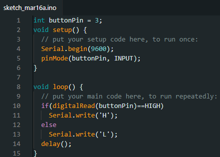

Estructuras De Control

¿Que es If?
if(condicional) y ==, !=, <, > (operadores de compraración)La condición `if`, que se usa junto con un operador de comparación, comprueba si se ha alcanzado una determinada condición, como que una entrada sea mayor que un número específico. El formato de una condición `if` es:
anexa imagen
El programa comprueba si una variable es mayor que 50. Si lo es, el programa realiza una acción específica. Dicho de otro modo, si la condición entre paréntesis es verdadera, se ejecutan las instrucciones dentro de los corchetes. Si no, el programa omite el código.
Los corchetes pueden omitirse después de una condición `if`. En ese caso, la siguiente línea (definida por el punto y coma) se convierte en la única condición.
anexa imagen
Las instrucciones que se evalúan dentro de los paréntesis requieren el uso de uno o más operadores `if`:
Operadores de comparación:
anexa imagen
Advertencia:
Tenga cuidado de no usar accidentalmente el signo de igual simple (por ejemplo, `x=10`). El signo de igual simple es el operador de asignación y asigna el valor 10 a `x` (lo coloca en la variable `x`). En su lugar, utilice el doble signo de igual (por ejemplo, `if(x == 10)`), que es el operador de comparación y comprueba si `x` es igual a 10 o no. Esta última afirmación solo es verdadera si `x` es igual a 10, mientras que la primera siempre lo será.
Esto se debe a que C evalúa la instrucción `if(x=10)` de la siguiente manera: se asigna el valor 10 a `x` (recuerde que el signo de igual simple es el operador de asignación), por lo que `x` ahora contiene 10. Luego, la condición `if` evalúa 10, que siempre resulta verdadero, ya que cualquier número distinto de cero se evalúa como verdadero. Por consiguiente, `if(x=10)` siempre resultará verdadero, lo cual no es el resultado deseado al usar una instrucción `if`. Además, la variable `x` se establecerá en 10, lo cual tampoco es la acción deseada.
`if` también puede formar parte de una estructura de control de ramificación mediante la construcción `if...else`.